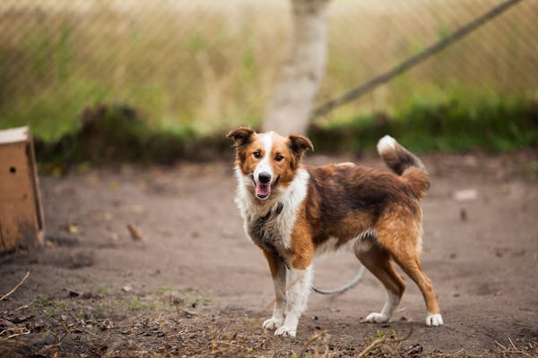
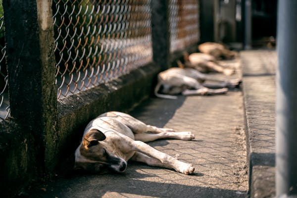
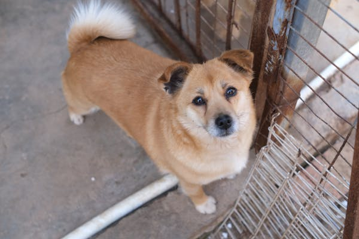

- 
- 
- 
Bienvenidos a Papitas Felices
Ayudando a nuestros amigos de cuatro patas a encontrar un hogar
Somos un grupo de personas que desde trabajamos en equipo para defender los derechos de todos los animales.Hacemos que las cosas sucedan, defendemos a los animales mediante cambios legislativos orientados a resolver el origen de los problemas que afectan a los animales.